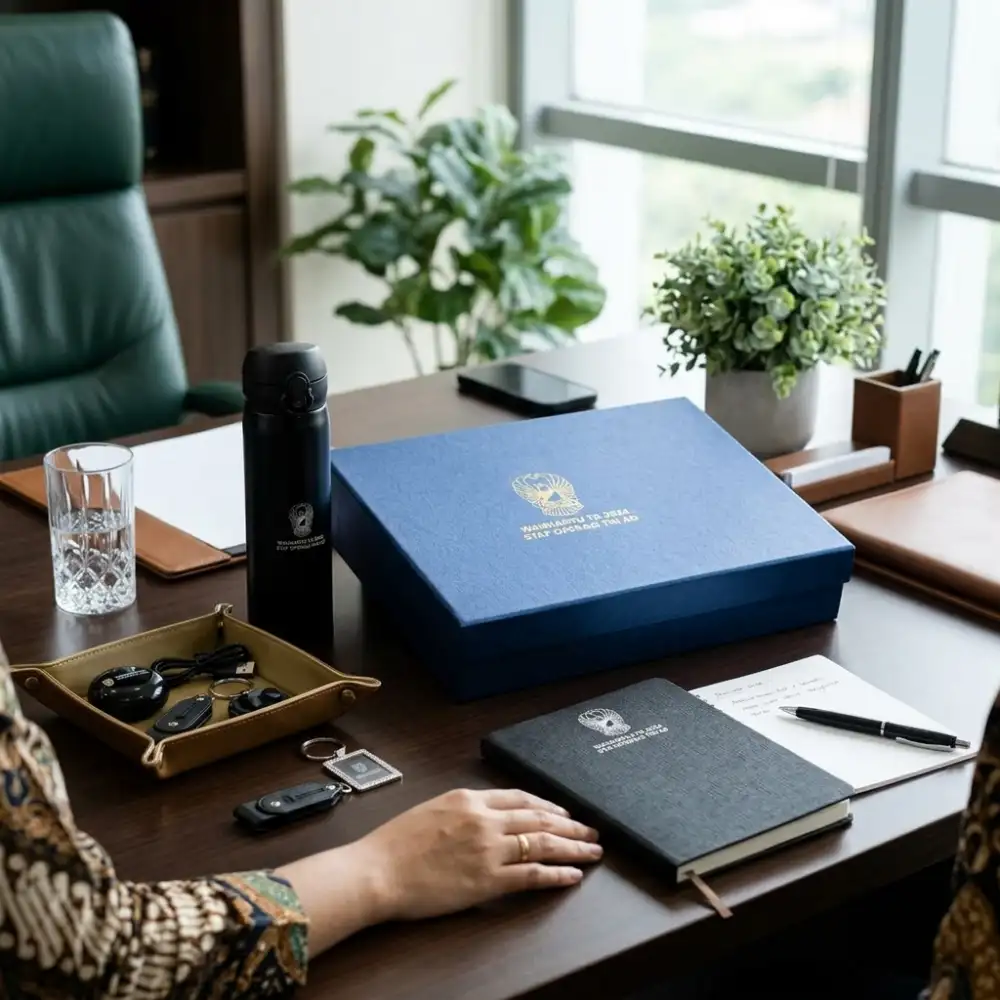

Lanyard Seminar Custom dan ID Card untuk Event, Workshop, dan Konferensi
Ciptakan sistem identifikasi peserta yang tertib, aman, dan berkelas melalui lanyard printing sublimasi full color serta ID card PVC tebal berstandar ATM. Dilengkapi stopper bongkar-pasang, pengait oval nikel kokoh, dan aneka pilihan card holder mika hingga kulit sintetis resmi.
Fungsi Vital Lanyard & ID Card dalam Ekosistem Event
Dalam operasional seminar, lokakarya, pameran B2B, maupun konferensi akademik berskala internasional, lanyard seminar custom dan ID card bukan sekadar aksesoris pelengkap seremonial. Lanyard adalah garda terdepan sistem manajemen pengunjung (visitor management system) yang mengendalikan alur registrasi, validasi zonasi ruang, dan otorisasi akses para pemangku kepentingan acara.
Dengan menggantungkan ID card di leher secara konsisten, panitia keamanan (security officer) dan petugas meja registrasi dapat dengan mudah mengidentifikasi status seseorang dari kejauhan — membedakan mana Peserta Umum, Panitia Internal (Organizing Committee), Narasumber / Keynote Speaker, Media Pers, hingga Tamu Undangan VIP / VVIP yang memiliki izin akses ke ruang transit khusus atau area backstage.
Keamanan & Kontrol Akses
Mencegah masuknya pihak luar tanpa izin ke dalam ruang seminar berbayar serta memudahkan integrasi scan QR code sistem presisi digital.
Fasilitator Networking Peserta
Nama dan institusi yang tercetak jelas pada kartu mempermudah interaksi komunikasi profesional dan pertukaran kontak selama jeda coffee break.

Pilihan Paket Lanyard & Holder ID Card
Tersedia ragam material tali premium, mekanisme pengait logam tahan karat, dan casing kartu sesuai skala kemewahan acara.
Lanyard Tissue Sublimasi 2cm
Standar emas lanyard event profesional. Bahan pita kain tisu super lembut tanpa serat kasar yang gatal di kulit leher. Cetak sublimasi resolusi tinggi full color dua sisi dengan hasil warna cerah tahan cuci.
- Bahan Tali: Kain Tisu Halus Poliester Premium
- Lebar & Panjang: Lebar 2.0 cm × Keliling 90 cm
- Teknik Cetak: Sublimasi Full Color HD 2 Sisi
- Aksesoris: Pengait Nikel Oval + Stopper Bongkar-Pasang
- Aplikasi: Konferensi, simposium, pameran korporasi
Lanyard Polyester Sablon
Solusi hemat biaya untuk event massal mahasiswa, ospek kampus, atau kepanitiaan organisasi. Berbahan rajut poliester bertekstur kokoh dengan sablon pasta rubber presisi 1-2 warna.
- Bahan Tali: Polyester Woven Rajut Tebal
- Lebar: 1.5 cm atau 2.0 cm
- Teknik Cetak: Sablon Manual Pasta Rubber Timbul
- Pilihan Warna: Puluhan varian warna dasar pita
- Aplikasi: Ospek mahasiswa, festival seni, gathering umum
Lanyard Double Hook Anti-Terbalik
Didesain khusus dengan 2 pengait di sisi kanan dan kiri ujung tali. Menjaga posisi ID card ukuran besar (B4/A6) tetap lurus menghadap depan tanpa pernah terbalik saat peserta berjalan aktif.
- Sistem Hook: 2 Kait Logam Nikel (Double End Hook)
- Bahan Tali: Kain Tisu Lebar 2.0 cm atau 2.5 cm
- Keunggulan: Posisi kartu stabil 100% selalu tampak depan
- Kompatibilitas: Holder mika plastik ukuran B4, B3, atau A6
- Aplikasi: Konferensi medis internasional, summit G2B, pameran expo
ID Card PVC Standar ATM (0.76mm)
Kartu tanda pengenal berbahan lembaran polivinil klorida (PVC) tebal 0.76mm dengan sudut membulat (rounded corner). Tahan air, tidak mudah patah, dan tahan goresan hingga tahunan.
- Ukuran: Standar ISO CR80 (85.6 × 54 mm)
- Ketebalan: 0.76 mm Solid Rigid PVC
- Pencetakan: Digital Offset High Def Color Anti Luntur
- Fitur Data: Cetak Nama, Foto, Barcode, & QR Dinamis
- Finishing: Glossy mengkilap atau Matte Doff elegan
Card Holder Kulit Sintetis PU
Casing pelindung kartu bernuansa formal mewah berbahan kulit sintetis polyurethane (PU Leather) dengan jahitan tepi rapi. Dilengkapi slot kartu tambahan di bagian belakang untuk kartu nama bisnis.
- Material: PU Leather Premium serat halus anti pecah
- Kapasitas: 1 Jendela mika depan + 1 slot kartu belakang
- Orientasi: Tersedia Model Potret (Tegak) & Lanskap (Mendatar)
- Branding: Opsi Emboss Timbul logo instansi di bagian belakang
- Warna: Hitam Elegan, Cokelat Klasik, Navy Blue, Tan
Card Holder Mika Transparan / Akrilik
Pelindung kartu berbahan plastik mika PVC elastis kedap air atau casing akrilik keras (hard case) transparan bening. Tersedia dalam aneka dimensi ukuran mulai dari kartu saku hingga tiket besar.
- Pilihan Bahan: Soft Vinyl Mika PVC Bening / Hard Acrylic Case
- Pilihan Ukuran: B1 (10.2 × 6.5 cm), B2, B3, B4 (15.5 × 10.5 cm), A6
- Ketebalan: Mika 0.15mm - 0.20mm kuat dengan lubang plong
- Visibilitas: Kejernihan optik 100% memudahkan barcode scanner
- Kelebihan: Melindungi kartu dari tumpahan air minum dan debu
Spesifikasi Material, Lebar Tali, & Pilihan Aksesoris
Pelajari anatomi kelengkapan lanyard seminar untuk memastikan ketahanan mekanis dan kenyamanan pemakaian sepanjang hari.
| Varian Lanyard | Material Pita | Lebar Standar | Aksesoris Bawaan | Rekomendasi Holder | Estimasi MOQ |
|---|---|---|---|---|---|
| Lanyard Tisu Sublimasi | Pita Tisu Poliester Lembut | 2.0 cm / 2.5 cm | Pengait Oval + Stopper Hitam | PVC Card ATM / Holder Kulit | 50 Pcs |
| Lanyard Polyester Sablon | Polyester Woven Bergaris | 1.5 cm / 2.0 cm | Pengait Cantel Besi Nikel | Holder Mika Plastik B1-B3 | 100 Pcs |
| Lanyard Double Hook | Kain Tisu HD Sublim 2 Sisi | 2.0 cm / 2.5 cm | 2 Pengait Logam Kiri-Kanan | Mika Ukuran Besar B4 / A6 | 50 Pcs |
| Lanyard Safety Breakaway | Tisu / Nylon High Density | 2.0 cm | Safety Clip Tengkuk + Stopper | Hardcase Akrilik / PU Leather | 50 Pcs |
| Lanyard Mini Tali HP | Pita Tisu Lembut | 1.5 cm / 2.0 cm | Kait Besi + Loop Tali Ponsel | Kartu Akses Flashdisk / ID | 50 Pcs |
Memilih Lebar Tali: 1.5 cm, 2.0 cm, atau 2.5 cm?
Lebar tali menentukan proporsi visual logo serta kenyamanan peserta di area leher:
- Lebar 1.5 cm: Sangat ramping, berbobot super ringan, dan terkesan minimalis. Cocok untuk acara santai, pelatihan internal perusahaan dengan logo horizontal sederhana, atau budget hemat.
- Lebar 2.0 cm (Paling Banyak Dipilih): Dimensi paling ideal dan proporsional. Ruang cetak sangat lapang untuk memuat logo instansi, nama kegiatan, dan motif ornamen batik/vektor tanpa terlihat terlalu sempit maupun kebesaran.
- Lebar 2.5 cm: Memberikan kehadiran visual yang sangat tegas dan mencolok. Biasa digunakan untuk konferensi akbar multinasional atau festival besar di mana terdapat banyak barisan logo sponsor pendukung (corporate sponsors) yang harus ditampilkan berurutan di sepanjang tali.

Informasi Penting pada Kartu ID Seminar
Desain tata letak kartu identitas harus menyeimbangkan unsur estetika visual dengan kecepatan verifikasi mata petugas di lapangan. Berikut komponen esensial yang wajib disematkan pada kartu:
1. Nama Lengkap & Asal Instansi Peserta
Dicetak dengan ukuran font tegas (minimal 14-16pt) agar dapat terbaca jelas dari jarak bicara normal 1 meter, memfasilitasi komunikasi saat networking session.
2. Kategori Peran / Role Akses
Label status yang mencolok (misalnya: PARTICIPANT, COMMITTEE, SPEAKER, VIP, MEDIA) dengan kode warna latar berbeda untuk mempermudah identifikasi zonasi ruangan.
3. QR Code / Barcode Registrasi
Memuat kode unik data peserta untuk di-scan oleh panitia saat memasuki ruang auditorium, penukaran snack/makan siang, maupun klaim souvenir seminar kit.
Diferensiasi Warna Lanyard untuk Zonasi Acara
Untuk acara berskala ratusan hingga ribuan orang, membedakan warna tali lanyard adalah taktik manajemen lapangan yang paling efektif:
Lanyard Biru Navy / Hitam untuk Peserta Reguler
Warna dasar yang elegan dan formal, serasi dengan busana kerja atau pakaian batik para peserta seminar dan bimbingan teknis.
Lanyard Merah / Orange Terang untuk Panitia (Crew)
Warna kontras tinggi memudahkan peserta mencari pertolongan atau menanyakan arah meja registrasi, toilet, dan ruang medis kepada petugas panitia yang bertugas.
Lanyard Emas (Gold) / Kuning Mustard untuk VIP & Pembicara
Memberikan penghormatan eksklusif bagi narasumber, jajaran dekanat, direksi sponsor, dan pejabat kementerian yang berhak masuk ke ruang tunggu VIP.

Kombinasikan Lanyard dengan Paket Seminar Kit Lengkap
Di meja registrasi acara, lanyard dan ID card adalah item pertama yang dikalungkan ke leher peserta, sementara souvenir lainnya diberikan dalam satu kemasan terpadu. Seminarkits.id memudahkan Anda mendapatkan keseragaman visual menyeluruh di seluruh merchandise acara:
- Tas Seminar & Tote Bag Kanvas: Kemas seluruh perlengkapan materi pelatihan ke dalam tas berlogo senada agar rapi saat dibawa pulang.
- Notebook Seminar Custom: Buku catatan jilid spiral kawat berlogo instansi dengan skema warna yang matching dengan tali lanyard.
- Pulpen Custom Berlogo: Pena bergaransi tinta lancar dengan grafir laser atau cetak pad printing warna senada.
- Tumbler Minum Stainless: Botol termos ramah lingkungan untuk mendukung kampanye green event bebas sampah plastik.
Panduan Menyiapkan Data & Desain Cetak ID Card
Hindari kesalahan ketik dan keterlambatan produksi dengan mengikuti standar alur pengiriman data berikut.
Siapkan Spreadsheet Excel
Susun daftar peserta dalam file Excel dengan kolom terpisah: Nama Lengkap, Gelar, Asal Instansi/Perusahaan, dan Jabatan Akses.
Folder Foto Terstruktur
Jika menggunakan foto peserta, namai file foto persis sesuai nomor urut atau ID di Excel (contoh: 001_Ahmad.jpg) dalam resolusi minimal 300 DPI.
Master Desain Vektor
Kirimkan template desain background ID Card dan Lanyard dalam format vektor (PDF, AI, atau CDR) dengan area bleed keliling 2 mm.
ACC Digital Proofing
Tim produksi kami memproses database merge dan mengirimkan preview sampel beberapa kartu peserta untuk Anda verifikasi sebelum cetak massal.
FAQ Seputar Lanyard Seminar Custom & ID Card
Kumpulan pertanyaan teknis yang sering ditanyakan oleh penyelenggara event dan bagian logistik kepanitiaan.
Sublimasi HD 2 Sisi
Pewarnaan kain serat mikro merata, warna tajam anti pudar meski dicuci berulang kali.
Standar PVC Rigid
Ketebalan 0.76mm standar kartu perbankan ATM dengan sudut rounded rapi anti gores.
Pengerjaan On-Time
Kapasitas produksi hingga 3.000 set tali lanyard per hari untuk memastikan tepat waktu sebelum hari-H.
Packing Rapi Per Kategori
Penyortiran kartu dan tali terpisah per divisi/peran untuk mempermudah meja registrasi.
Produk Pelengkap Seminar Kit Terkait
Sempurnakan paket perlengkapan event Anda dengan ragam produk manufaktur kami lainnya.